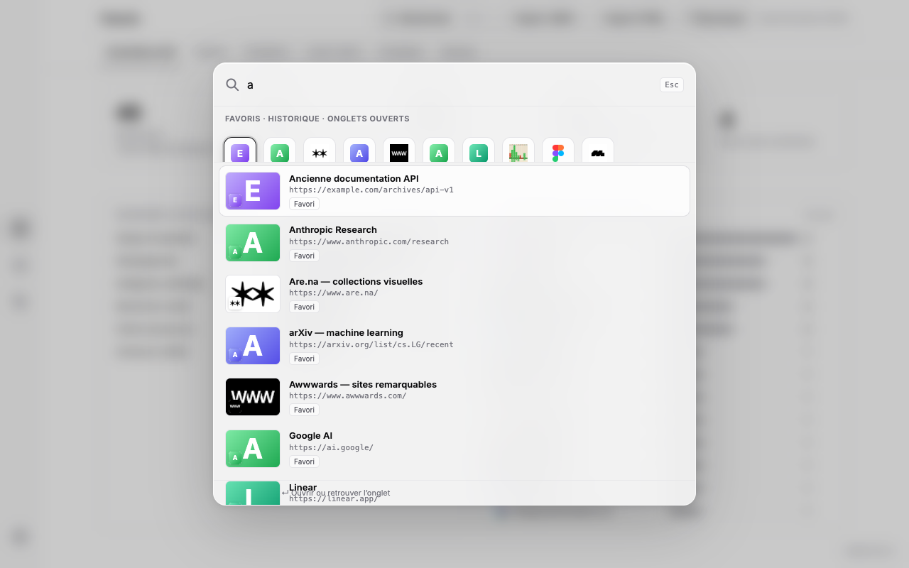
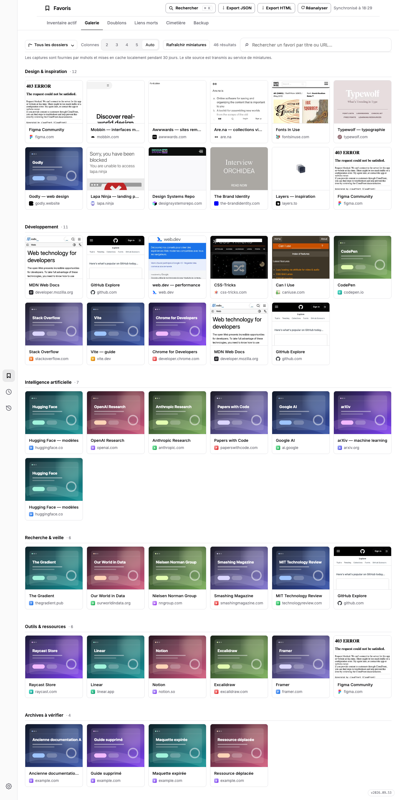
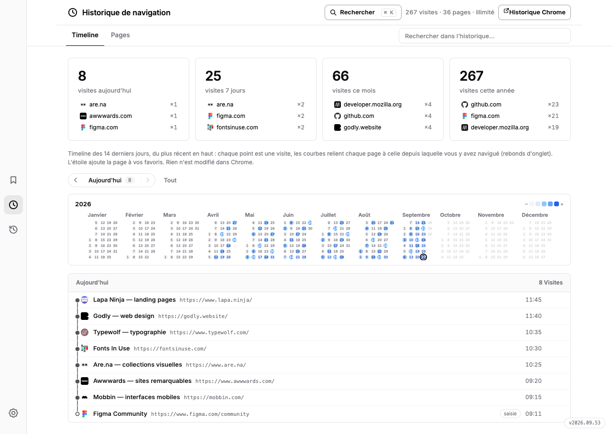
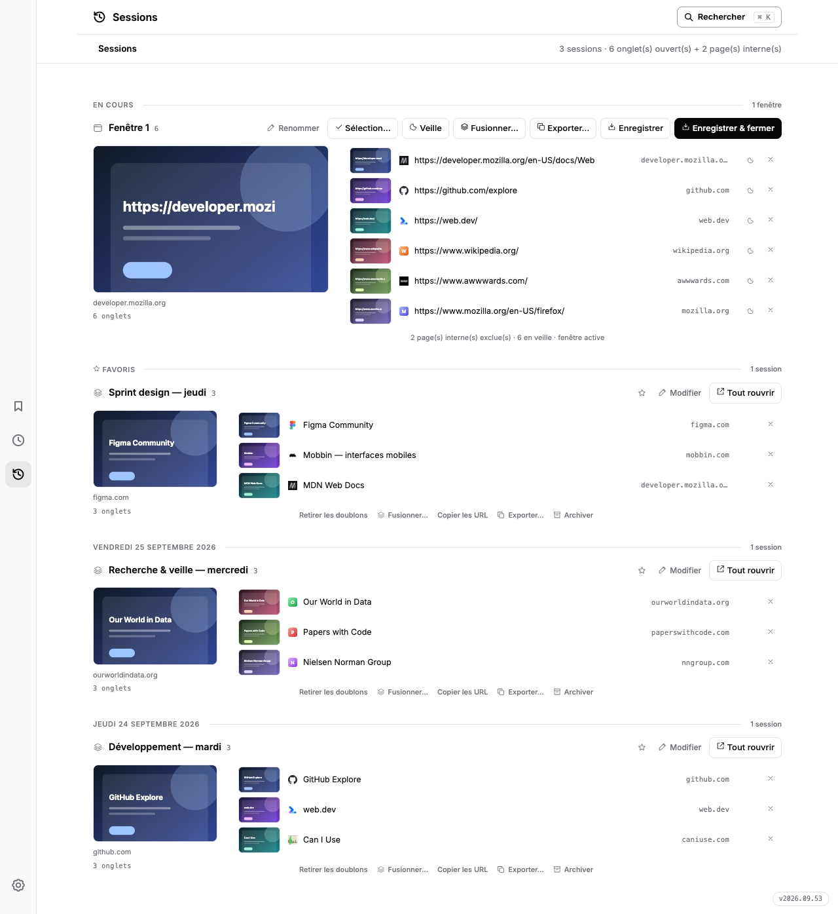
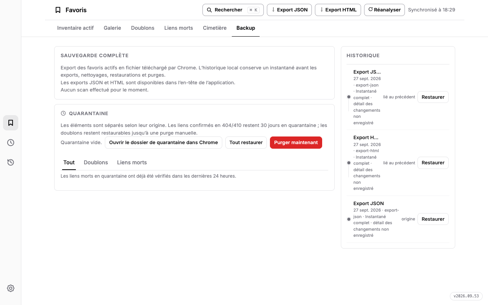

EXTENSION CHROME · GRATUITE · SANS COMPTE · OPEN SOURCE
Votre web a une mémoire.Donnez-lui une forme.
Des milliers de favoris, des visites qui s’enchaînent, des onglets qu’on veut garder. PK Web Memory réunit tout dans une vue claire pour retrouver l’essentiel, nettoyer et reprendre votre navigation jour par jour.

⌘K ou une simple frappe : une palette façon Spotlight cherche partout.
DE DOUBLONS
GARDÉES EN LOCAL
COMPTÉS « LIENS MORTS »
SORTANT DE CHROME
Un espace pour voir
ce que Chrome garde.
PK Web Memory relie trois morceaux de votre navigation : les favoris conservés, les pages visitées et les onglets ouverts maintenant.
Huit fonctions s’enchaînent — retrouver, voir, nettoyer, sauvegarder. Chacune est présentée ci-dessous avec son interface réelle, capturée sans coupe.
Une palette
pour tout trouver.
⌘K ou n’importe quelle frappe : une palette façon Spotlight cherche dans les favoris, l’historique et les onglets ouverts. ↵ ouvre le site ou retrouve son onglet déjà ouvert.
La masse devient
un territoire.
Commencez par l’inventaire : totaux, chemins de dossiers et domaines classés, avec barres de fréquence et favicônes. Passez à la galerie pour retrouver les sites par leurs miniatures, avec recherche, filtres et choix des colonnes.

Moins de bruit.
Plus de repères.
Les doublons se vérifient à trois niveaux. Le contrôle des liens morts ne retient que les réponses 404 et 410 confirmées — une panne passagère ne devient jamais un lien mort. Les éléments écartés passent par une quarantaine restaurable.

Retrouvez le fil
de vos visites.
Un calendrier pour choisir un jour. Une timeline pour suivre le trajet d’une page à l’autre. Une vue Pages pour relire les visites dans l’ordre, avec une recherche immédiate.

Ce qui est ouvert.
Ce qui mérite de rester.
Une timeline fusionnée façon Tablerone : la session en cours reste dépliée avec ses miniatures par ligne, croix pour fermer un onglet (annulable), aperçu de page au survol, vue élargie au clic. Rouvrez une journée complète ou restaurez un instantané daté ; sauvegarde automatique toutes les 5 minutes et mise en veille des onglets inactifs.

Votre collection.
Vos versions.
Exportez vos favoris en JSON ou en HTML. Chaque nettoyage, restauration ou purge crée un instantané local relié au précédent — jusqu’à 30 versions. Restaurer rétablit les favoris manquants sans effacer les ajouts plus récents. La quarantaine se gère depuis le même écran.

Vos données,
sans mystère.
Traités dans Chrome et stockés localement. L’éditeur ne reçoit aucune copie de vos données de navigation.
Les miniatures transmettent l’URL à WordPress.com mshots ; certains secours de favicônes utilisent Google S2 ; le scan contacte les sites vérifiés sans leurs cookies. Les pages chrome:// et fichiers locaux ne sont jamais scannés.
Caches et instantanés sont supprimables depuis l’extension. Un lien n’entre en quarantaine qu’après 30 jours avec un statut 404/410 confirmé.

L’ATLAS EST PRÊT
Redonnez une forme
à votre web.
PK Web Memory est une extension Chrome gratuite, disponible en mode développeur depuis ce dépôt. La fiche Chrome Web Store sera ajoutée dès sa publication.
Quelques points
avant de commencer.
Est-ce que le nettoyage supprime immédiatement mes favoris ?
Les doublons et liens mortes concernés passent d’abord par la quarantaine, restaurable. Un lien mort confirmé est retiré après 30 jours en quarantaine ; s’il répond de nouveau, il est signalé pour restauration. La purge des doublons reste manuelle.
La session en cours est-elle enregistrée automatiquement ?
La carte « Session en cours » reflète les onglets ouverts en direct. « Enregistrer la session » crée une copie datée, et les captures automatiques peuvent tourner toutes les 5 minutes.
La galerie envoie-t-elle des données à un service externe ?
Oui : pour produire les miniatures, l’adresse du site est transmise à mshots (WordPress.com). Les captures sont ensuite conservées localement pendant 30 jours, 60 entrées maximum.
Comment installer l’extension ?
Ouvrez chrome://extensions, activez le mode développeur, « Charger l’extension non empaquetée » puis sélectionnez le dossier extension/ du dépôt GitHub.